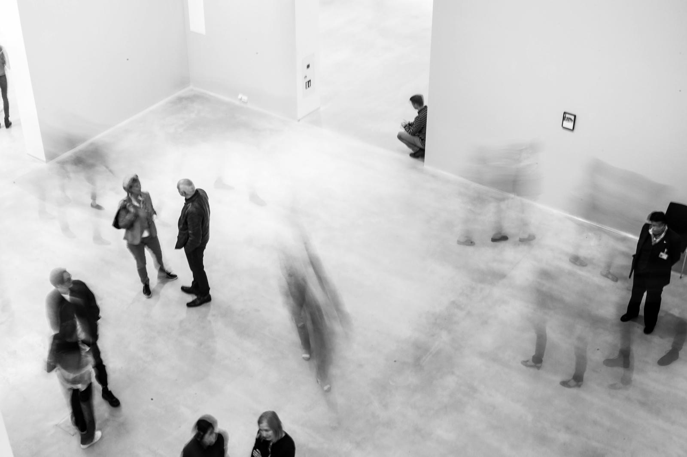
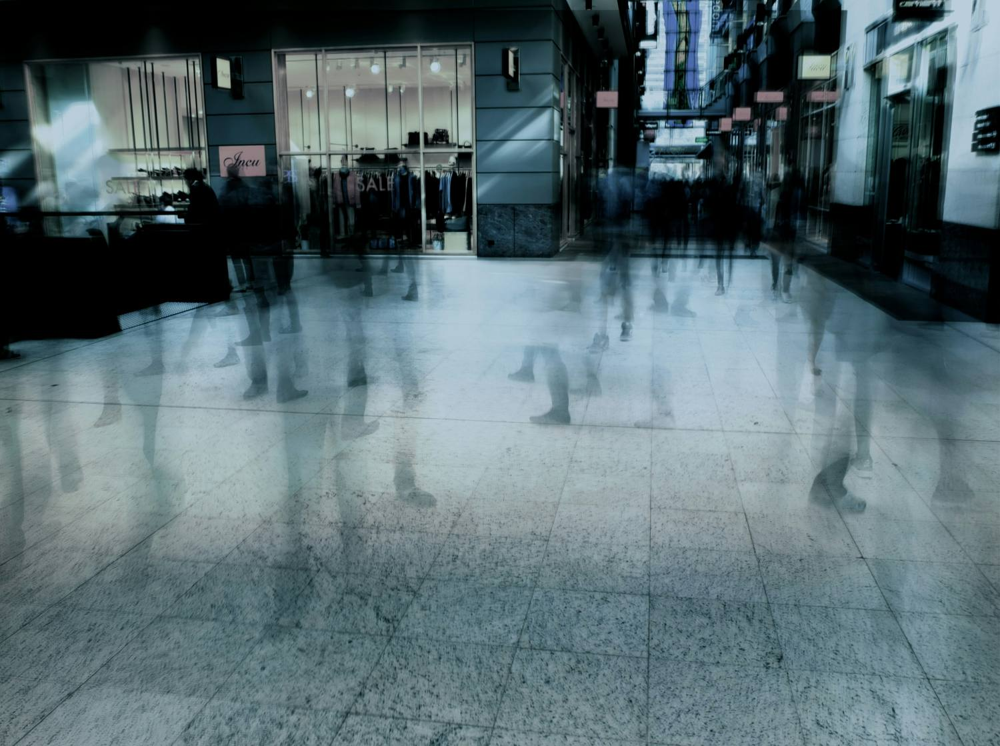

Jason Roberts, an entrepreneur and blogger, made this formula infamous in 2010. It has become foundational in startup culture ever since. It is also incomplete.
He argued that luck is not fixed. Luck scales. The serendipity in your life is proportional to doing something you are genuinely passionate about, multiplied by the number of people who come to know about it. That makes sense. He formalized it as L = D × T.
Luck = Doing × Telling.
The idea stuck. 15 years later and it is startup canon, repeated in accelerators and pitches. It lasts because it is simple and actionable. It rewards effort. Work harder in public and luck will find you.
That is exactly why it is worth revising. A formula this widespread is assumed. But things change and it deserves to be examined.
In 15+ years, considering all that has happened in business and technology, it has been repeated far more often than it has been investigated.
The formula thinks of telling as volume. More people → more surface → more luck. It assumes every channel you tell through is the same channel, where the only difference between them is the amount of reach.
That assumption fails. Telling is not a quantity. It is an environment.
There is a second layer here inside Roberts’ formula that is the insight I am looking for. Not a practical fix, like a list of actions you do or apply for a better outcome, but a structural one, how you rebuild a business model for 21st-century reality. We are instead running a 20th-century model on digital today.
Serendipity is a useful accident. In the startup space, it is the kind of encounter you didn’t plan that changes what might happen next. A chance encounter that results in a referral. A possible client. It feels like luck.
Serendipity used to be free-range. Its existence was a byproduct of the industrial era. The firm that you worked in put you in a building, assigned you on a team, paid for your conferences and gave you a title that told other people how to relate to you. You never needed to create serendipitous conditions. Institutions and businesses did. This structure has been dissolving in the post-industrial reality of remote work and distributed teams.
Three things replace that, in a post-industrial work environment.

The result is drawn from an exploratory survey of eight founders, comparing their reported time against the serendipity they perceived it returned: where they spent the most time returned the least serendipitous opportunities. And where they spent the least returned the most. 3 different perspectives:
It shows where founders believe their time goes and what they credit, not why some environments pay off and others don’t.
The time-luck inversion looks like proof that you should get off the screen and into the room. But that is the wrong lesson. Decades of supporting research say so, with far more data than a small founder survey.

Put the missing variable back. Luck was never doing × telling. It was doing × telling × the environment you tell into.
Environment is the frame, the conditions of the space that telling happens inside of. Set e near zero and no volume of doing or telling can recover any semblance of luck. Social and digital media are a low-e environment. That is the immediate observation but not the whole finding. This is a working model for thinking about the problem, not a proven law.
e is the environment your telling lands in. These three questions test any environment. Run any space you use against them to help determine where the luck leaks out of the cracks.
These three properties can be added to a space you already use: a Slack, a Discord, a group chat, a pitch night. You do not need to build anything. What matters is the design, not the tool. Tools change all the time. These principles do not.
What the industrial era institution used to hand you, you now have to build yourself. This is what building it looks like, in the one place everybody already spends their time: online.
This is one reading of the current business environment. The Post-Industrial School exists to read the rest, to name and shape a new model while it is still forming rather than after it has become standardized.